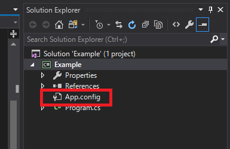
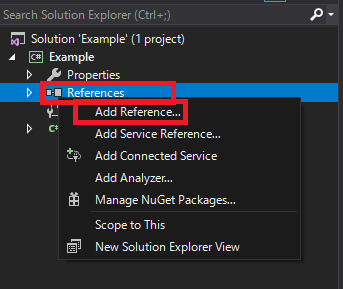
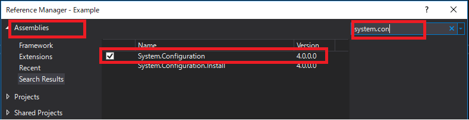
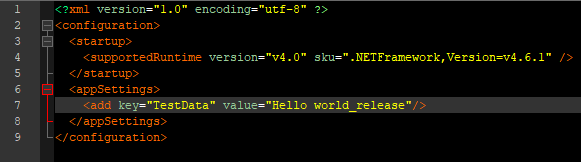

[C#] 環境設定ファイルを扱う方法(System.Configuration)
こんにちは。明月です。
この投稿はC#で環境設定ファイルを扱う方法(System.Configuration)に関する説明です。
プログラムを作成する時にプログラムによって環境ファイルを設定する場合があります。例えば、ログファイルの格納パスやサーバによって設定するデータなどです。
以前、C++ファイルの場合はiniファイルを設定ファイルによく使いました。もちろん、C#でiniファイルを使えないことではないですが、基本XMLファイルで環境設定を行います。
Javaの場合「.property」ファイルが環境ファイルでよく使います。(XML形式も多いです。)
C#ではXMLになっているapp.configファイルを環境ファイルでよく使います。
プロジェクトを生成すればC#は基本的にApp.configファイルが生成されます。

その後、app.configファイルにデータを設定してプログラム上で読み込みます。
<?xml version="1.0" encoding="utf-8" ?>
<configuration>
<startup>
<supportedRuntime version="v4.0" sku=".NETFramework,Version=v4.6.1" />
</startup>
<appSettings>
<add key="TestData" value="Hello world"/>
</appSettings>
</configuration>
appSettingsのタグの中でaddタグを追加します。ここでkeyというアトリビュートはプログラムで読み込むキーでvalueは値です。
configファイルを読み込むためにライブラリを追加しなければならないです。
(App.configは基本的に生成されるのにライブラリは追加することで。。)


using System;
using System.Configuration;
namespace Example
{
class Program
{
// 実行関数
static void Main(string[] args)
{
//App.configファイルに作成したキー名をここで入力する。
String data = ConfigurationManager.AppSettings["TestData"];
// 結果はHello worldが表示するはず。
Console.WriteLine(data);
// コンソール出力
Console.WriteLine("Press any key...");
Console.ReadKey();
}
}
}
ConfigurationManager.AppSettingsクラスにindexer形式でキーの値を入れればApp.configに設定した値を取得できます。
プログラムをリリースしたらApp.configファイル名は「プロジェクト名.exe.config」で変更されます。

ここまでC#で環境設定ファイルを扱う方法(System.Configuration)に関する説明でした。
ご不明なところや間違いところがあればコメントしてください。
- [C#] PDFを作成する方法(iTextSharp)2020/05/03 10:22:40
- [C#] シリアライズ(Serialization)をする方法2020/04/30 19:32:04
- [C#] dynamicタイプの動的パラメータ-DynamicObject(WinFormでASP.MVCのViewBagオブジェクトを使用する方法)2020/04/29 22:41:32
- [C#] Stringの補間式(interpolation)2020/04/27 20:39:57
- [C#] Newtonsoft.JSONライブラリを利用してJsonデータ構造を扱う方法2020/04/23 20:19:53
- [C#] EMailを送信する方法(System.Net.Mail)2020/04/22 19:00:42
- [C#] ini環境ファイルを使う方法2020/04/22 00:09:39
- [C#] 環境設定ファイルを扱う方法(System.Configuration)2020/04/20 19:37:57
- [C#] Reflectionを利用してクラス複製する方法2020/04/17 00:34:33
- [C#] XMLをXPathを利用してデータを取得する方法2020/04/16 00:47:17
- [C#] NSoupライブラリを利用してXMLとHTMLをパーシングする方法2020/04/14 19:34:15
- [C#] 日付フォーマット2020/04/09 20:53:20
- [C#] ログライブラリ(log4net)を設定する方法2020/04/08 13:04:22
- [C#] Zipの圧縮ファイルを解凍するコードを作成する方法2020/04/07 11:17:44
- [C#] Zip圧縮コードを作成する方法2020/04/06 14:56:13
- [Design pattern] プロトタイプパターン(Prototype pattern)2021/10/22 19:35:45
- [Project design] プログラム検証とテスト - Unitテスト2021/10/22 19:34:09
- [C#] 57. コーティング規約2021/10/21 18:57:02
- [C#] 56. 値の初期化及び基本データ値(default)を設定する方法、そして原始データのnull処理、?と??の使い方2021/10/21 18:54:41
- [C#] 55.namespaceとusing、そしてpartialの使い方2021/10/21 18:51:39
- [C#] 54. Reflection機能を使い方 - Attribute2021/10/20 19:29:31
- [Project design] プログラム制作(コーディング) - クラス作成方法2021/10/20 19:28:09
- [C#] 53. Reflection機能を使い方 - Propertyとevent2021/10/19 21:02:58
- [Project design] プログラム制作(コーディング) - 関数作成方法2021/10/19 21:01:32
- [CentOs] ジェンキンス(Jenkins)をインストールする方法2021/10/18 18:28:58
- [Project design] 詳細設計(インターフェース設計と抽象化作業)2021/10/18 18:23:15
- [Project design] 基本設計(画面設計とDB設計)2021/10/17 21:21:11
- [Design pattern] 1-4. デザインパターンの抽象ファクトリーパターン(Abstract factory pattern)2021/10/15 19:31:03
- [Project design] 要件定義(要求事項整理)2021/10/15 19:28:58
- [C#] 52. Reflection機能を使い方 - Variable2021/10/15 19:27:37